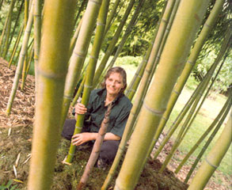
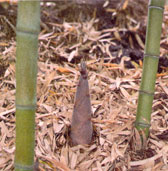
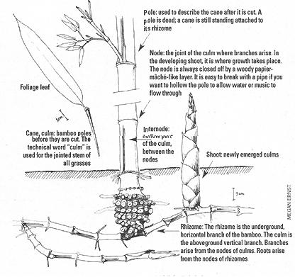
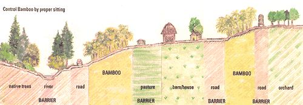
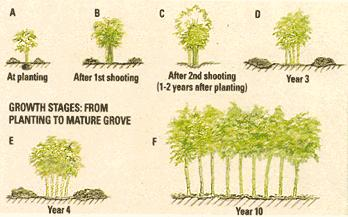

Can Do Bamboo
Though long misconstrued as an exclusively tropical plant, bamboo can actually be grown as a farm crop in much of the United States. Once you learn how to plant, grow and utilize this fast-growing, beautiful and functional backyard resource, you may never go back to wood.
August/September 2000
By Daphne Lewis
Despite its image as an exotic ornamental, bamboo can be grown as a farm crop in much of the United States. It adapts well in the South from Virginia to Florida and along the Gulf Coast to Texas, on the West Coast with summer watering, and in Puerto Rico and Hawaii. Unlike truly non-native farm crops such as sugar beet, wheat, asparagus and kiwi, two species of bamboo are in fact indigenous to the Southeastern U.S.: river cane (Arundinaria gigantea) and switch cane (Arundinaria tecta). Still, you'd have to search far and wide to find bamboo in commercial production in this country.
Much of what is grown here is in the hands of bamboo lovers (we call ourselves bambuseros) who grow the plant as an ornamental in the above states, as well as in harsher climates such as those of New England, the mid-Atlantic region and the Midwest.
It's not that the U.S. Department of Agriculture (USDA) didn't try. Recognizing the potential particularly of Asian bamboos as a commercial crop, the USDA, between 1890 and 1960, paid plant explorers to find, select and import farmable bamboos. But while the agency succeeded in establishing these bamboos at its tropical and temperate research sites in Puerto Rico, Georgia and California, it failed in its ultimate goal of introducing bamboo to American agriculture. U.S. farmers did not plant bamboo then and few more are planting it now, despite its enormous potential as a food and fiber crop.
But times they are a-changin'. With other novel farm products such as kiwi, exotic mushrooms and ginseng all accepted by the American public, perhaps the day has come, at long last, for bamboo to be as well.
A budding bamboo shoot
WHY GROW BAMBOO?
Good Eating
Fresh bamboo shoots are a specialty perennial crop. Delicious and nutritious, they're low in fat and high in water and fiber. Locally grown shoots (a rarity in this country) are scooped up by upscale Asian or vegetarian restaurants and at farmers' markets.
Sun Yen Paul, a friend from mainland China, recalls how her grandmother created tasty dishes by stir-frying fresh shoots with pork fat or savory chicken, allowing the bamboo to absorb the flavor of the meat. For a lighter cuisine, Paul suggests stir-frying shoots with other fresh vegetables such as mushrooms, onions, garlic and carrots, in a dark, full-bodied sesame oil. Season with soy sauce and ginger and serve over steaming rice.
Some bamboo varieties produce shoots that have an acrid taste when raw, especially if the sun has hit them. Cooking often solves the problem. For more resistant varieties, try parboiling peeled and sliced shoots for a few minutes before adding them to your favorite recipes. The boiling time will vary, depending on the degree of acridity and size of your shoot slices.
Versatile Poles
Bamboo poles are strong, lightweight and endlessly useful around the farm or homestead. I have sold them for purposes ranging from training sheepdogs to building fences, even for counting seals in Alaska (wildlife biologists used the poles to hold off the mother seals so they could check the pups).
Farm-grown, cured poles can compete with cheap imports if they are selected for a niche market. Find a repeat buyer such as a tepee or yurt manufacturer. Grow varieties whose cured poles retain their color, be it black bamboo (Phyllostachys nigra) or bory bam boo (P. nigra Bory). Cut poles long or raise them for superior quality. Produce highly prized square timber poles by placing square forms tightly around young bamboo shoots. The shoots will grow through the forms and take their shape. Square bamboo poles are so valuable and rare you can name your price for them.
Nursery Plants
The surest bamboo business is a nursery. Bamboo nurseries sell largely to suburban and urban dwellers who want privacy from neighbors or passers-by. Bamboo makes an excellent hedge because it's narrow, beautiful, evergreen and, if bought in small place-in-your-vehicle pots, grows to desired height within three years - then stops.
Dealing in bamboo starter plants has its advantages. Every shoot that comes up and leafs out can be potted and sold - and for significantly more than it would fetch as a vegetable. Consequently, bamboo nursery owners can often make a decent living on remarkably little land. Stan Andreason operates Beauty and the Bamboo out of his Seattle, Washington, home, located on a single city lot. For years until he got his greenhouses up, Gib Cooper ran his mail-order Tradewinds Bamboo Nursery with his entire stock occupying an eight-foot paved area alongside his house in Gold Beach, Oregon. Gib's bamboos are grown and shipped to hundreds of locations in one-gallon pots.
The American Bamboo Society currently lists on its Web site no less than 91 bamboo nurseries and product suppliers nationwide.
Sun Buckets, Windbreaks & Erosion Control
Plant bamboo to create microclimateson the farm. Fence off a grove of bamboo in the middle of a pasture. Animals will move to the shady side of the grove in summer and to the sunny side in winter.
Create a bamboo sun bucket. Plant a grove of timber bamboo to the north of a field and midsize bamboos on the east and west sides. The bamboo will block the north wind and reflect the sun, so that the field warms sooner in spring and retains more heat in summer.
Plant bamboo to prevent erosion and conserve land. Renowned for its extensive rhizome and root system, bamboo is planted in Japan on levees, on mountainsides and along the coast. In floods, the rhizomes and roots hold the soil, while the standing culms slow the rush of water.
Wastewater Mitigation
Like other grasses, bamboo is a glutton for water and nitrogen. When we dig bamboo in the Northwest the soil is always dry underneath, even during our rainy winter season. The bamboo taps the soil with its massive root system and its huge number of thirsty evergreen leaves. If a farm generates extra wastewater from dairy operations or aquaculture, for example, bamboo can turn that wastewater into biomass. Bamboo will also happily receive gray water from your house.
That said, bamboo will also - like other grasses - adapt to the conditions in which it finds itself. My 35-year-old grove of henon bamboo (Phyllostachys nigra henon) receives only rainwater, which in Seattle generally means three inches per summer. My plants grow to 31 feet, producing two-inch diameter poles and the equivalent of 2 1/2 tons of bamboo shoots per acre.
While productivity is no doubt improved by increased water during the growing season (the Chinese claim to get 10 tons of shoots an acre in managed groves), bamboo can survive on whatever water is available.
Runoff and Water Quality
The endangered Northwest salmon depends on clean (i.e., nutrient-poor), very cold water. Conventional farming adds soil nutrients to waterways via runoff from pastures and plowed fields. The soil clouds and poisons clean water. It also heats up waterways by forcing the clearing of trees from the banks of ditches and small streams.
Bamboo can help farms reduce soil load to waterways and increase shade. Planted in the swales of pastures, bamboo will catch soil nutrients in runoff and prevent them from entering nearby streams. Planted along ditches and creeks, it will shade the waters and reduce heat buildup.
This is not to suggest that native forests be cut down to plant bamboo, only that bamboo might be used along waterways to replace annual and perennial crops, such as raspberries and grazed pasture.
Carbon Sequestration
As if its many beneficial characteristics weren't enough, bamboo can also reduce CO 2 buildup in the atmosphere. Because bamboo is evergreen, it photosynthesizes and turns carbon dioxide into sugars year-round. A natural bamboo forest grows new leaves and culms every year, realizing a greater annual increase in biomass than a tree forest. And a managed bamboo forest, in which 20% of standing culms are harvested each year to encourage new growth, outproduces a natural one.
Wildlife Habitat
Deer bed down in bamboo, birds hang out in it and beavers build dams with it.
If you plant bamboo mainly to provide wildlife habitat and to enhance water quality, choose the native American bamboo, Arundinaria gigantea, which under ideal conditions grows to 20 feet tall and an inch in diameter, but more often measures in at eight to 16 feet. While too small for commercial poles, A. gigantea is fine for garden stakes, fence pickets and fishing poles, and the wood is hard and durable.
If you are planting primarily for shoots and poles, choose the larger Asian bamboos. They'll attract wildlife just the same and are far more commercially viable.
WHERE CAN I GROW BAMBOO?
Bamboo can be grown as a farm crop wherever it is not killed to the ground in winter. In the U.S., that means the Southern and Pacific states. Where routinely frozen back, evergreen bamboos become low-growing herbaceous grasses and can be grown as garden plants but not farm crops. Bamboo is grown as an ornamental garden plant from Massachusetts to Florida, from British Columbia to San Diego and in Texas, New Mexico and Arizona.
Bamboos can be divided into two groups: hardy and tropical. Hardy bamboos are best suited for USDA zones 8 (10°F to 20°F minimum winter temperatures) and 9 (20°F to 30°F minimum temperatures).
To farm hardy bamboos, you need warm summers and moderate winters. Culms must be at least three years old and preferably four or five years old to be harvested as poles. A bamboo that is frozen to the ground frequently will never mature its culms to harvestable age, nor will it produce shoots large enough to sell.
Hardy bamboos are "runners," meaning their rhizomes spread along the surface of the ground in summer. Planted on a small scale, runners can be contained by burying a plastic barrier, 40 millimeters thick and 30 inches deep, all around the stand. For the larger-scale farmer, runners are best contained through strategic site planning (see illustration ). You might also try (as one farmer I know did) to turn the problem into a plus by harvesting, potting and selling the rhizomes.
Tropical bamboos are best suited for zones 9 and 10 (30°F to 40°F minimum temperatures). They are clumpers, having short, thick rhizomes at the base of each culm, and so do not present the containment challenges of runners.
Tropical bamboos vary in their tolerance for freezing weather. Some endure a few days below freezing with little damage; some are killed. In general tropical bamboos, which produce strong poles and fine shoots, can be grown as a farm crop in Florida, in Southern California and along the Gulf Coast.
WHICH BAMBOO SHOULD I PLANT?
To select your bamboos, determine which will grow in your planting zone; then narrow your list to those best suited to your purpose - be it to produce the best tasting shoots or the longest, strongest poles.
Every April the American Bamboo Society (ABS) publishes a list of bamboos available in the U.S., along with their suppliers. The ABS Species Source List for 2000 names 373 kinds of bamboo, describing each in terms of its uses, maximum height and diameter, and sun, shade and temperature requirements. (Included is a short list of extremely cold-hardy bamboos that will survive, if not thrive, to -20°F!)
My own handbook, Hardy Bamboos for Sboots and Poles, lists and describes 30 varieties of the genus Phyllostachys suitable for USDA zones 7, 8 and 9. Each variety is assessed, not only for its uses, size and climate needs, but also for the quality of its shoots and poles. Bamboo nurseries or growers in your area are also invaluable resources; no one will know better what varieties will flourish where you live.
No matter the bamboos you choose, keep in mind two basic planting principles:
1. Plant several varieties, not just one, to ensure that when one grove flowers - and consequently stops sending up new shoots - other groves will continue to produce. Flowering in bamboos is rare but unpredictable and can last several years.
2. A small, well-watered and thinned grove is more productive and easier to harvest than is a large, unthinned, uncared-for grove.
GETTING BAMBOO
With more than 90 bamboo nurseries operating nationwide, it's easy to purchase bamboo starter plants in small quantities. For farm-scale quantities, you'll have to contract with one or more nurseries well in advance of your desired planting date.
For establishing a farm grove, a small healthy potted bamboo is superior to a large bamboo freshly dug from the ground. The small potted bamboo will send up larger shoots the next growing season. The large, transplanted bamboo will send up small shoots the next growing season - assuming you have the time to stake it and water it constantly for the first few weeks after planting.
While it's true that if you call around, put ads in the paper and get in on the bamboo network you can often find bamboo free for the digging, remember that everything has its price:
A) Spread mulch outside root ball.
B) After first season, place deep mulch well outside drip line.
C) Shaded area is the growth from the first season, while the white area marks the new canes from the second growing season.
D) In year three, remove all or most canes from first season.
E) Rhizomes have spread and matured so new canes arise well outside the original root ball. Thin so that the bamboo shades its culms and the ground while its leaves and branches receive sunlight. F) A mature grove. Continue to thin for best leaf and branch sunlight.
PLANTING BAMBOO
Once you've acquired your bamboo, you'll need to get it in the ground.
1. Place the root ball at the same level it was when dug from the ground or pot. Do not add soil on top of the root ball. Bamboo rhizomes and roots are extremely sensitive to changes in their position relative to the surface of the ground. Planting deep is the main cause for lack of growth of transplanted bamboo in the Pacific Northwest. Usually people plant deep to prevent the bamboo from blowing over. If there is any chance of this, stake the plant but do not bury the root ball.
2. Make a dam around the planting hole, well beyond the root ball, to hold water. If the plant is on a slope, make a dam below but not above the plant. You want to catch rainwater, not divert it. Water deeply and thoroughly by filling the catchment several times after backfilling the hole. This settles the soil around the root ball. Add more soil if needed. Try to saturate the surrounding soil so that it keeps the root ball moist until the bamboo can spread its roots into the new soil.
3. Beyond the root ball and its catchment area, make a doughnut of deep mulch measuring a few to many feet wide. Deep mulch controls weeds and encourages the bamboo to spread. Rhizomes and feeder roots will spread eagerly into the moist soil below the mulch and especially up into the mulch itself.
4. Mulch the top of the root ball very lightly. Too much mulch rots rhizomes and allows rodents to nest. Do not let mulch touch culms, as rodents will hide in it and eat culms and new shoots. Conversely, too little mulch bares the soil and allows overheating and the germina tion of weed seeds. Instead of mulch, some tree planters use a circle of brown paper with a cutout for the trunk. The paper shades the ground to prevent weed seeds from germinating. A paper mulch can easily be adapted to new bamboo plantings. Cover the outside edge of the paper with mulch to hold it in place. Make the above recommended doughnut of thick mulch outside the paper.
5. Allow coyotes, the great eaters of mice, access to your bamboo groves! Provide habitat for owls and hawks.
6. Optional: Set a windbreak/sun shield to the south and west of your bamboo. Use burlap or shade cloth fastened to stakes or bamboo poles. The culms and leaves of young, newly planted bamboo turn yellow in full sun, even in gray Northwest winters. Bamboo is a forest plant; tempering its immediate environment with protection from sun and drying wind may allow young bamboo to grow faster.
To plant a grove:
To establish a farm grove, some people plant bamboo as close together as five or ten feet. Others plant it 20 to 25 feet apart and farm the alleys in between for a few years while waiting for the bamboo to close rank. Either way, the grove requires considerable mulching, watering, thinning and weeding, at least for the first two years. Water your bamboo an inch a day during the growing season and you will be astonished at the shoots it sends up the following spring. Remember, few er plants with outstanding care will far outproduce more plants with less care. This is particularly true in the Pacific Northwest, with its arid summers and aggressive feral weeds such as blackberries, field bindweed and reed canary grass.
A planting of bamboo takes seven to ten or more years to mature. A mature timber bamboo sends its shoots upwards 50 or so feet in two months. Hardy running bamboos then shoot their rhizomes sideways all summer, until the soil cools down in October; their rhizomes will extend 20 feet in a single growing season.
Ultimately, a productive farm grove will be a forest that allows the farmer to walk in its shade. The canes will be evenly spaced, averaging three to eight feet apart. Spacing depends on the height of the average cane, since each cane grows branches in proportion to its height and those branches need light to maintain their leaves. Tall canes with long branches need more space between them than do short canes with short branches.
Harvesting Shoots
Bamboo produces shoots when the soil warms up in spring. Casual harvesting is easy. Take a kitchen knife and cut at ground level any fat shoot that extends about six inches above the soil. If the shoot is tough, leave it there to rot. If it's tender, put it in your bucket for later cooking. Don't take all of the new shoots from any single plant; allow enough shoots to mature into culms to replace the poles that you will be harvesting.
Commercial harvesting is more complicated. Your goal as a commercial grower is to produce in quantity the largest shoots and poles possible. A grove with large canes spaced far apart produces more and bigger shoots than a grove with small canes spaced close together. It also produces a greater gross weight in poles, even though the number of poles is fewer.
To ensure a productive commercial grove, mark the biggest and best shoots and allow them to grow into poles. Limit your takings to small and midsize shoots. Only harvest the biggest shoots if they will crowd each other as they grow. Once your grove matures, and assuming it's well-man aged, there will be excess large shoots to harvest and sell. Harvest every second or third clay while the grove is shooting.
I use a sharpened, narrow D-handled spade to cut the shoot below ground, where it attaches to the rhizome. By cutting below ground I get a heavier shoot (shoots are sold by the pound). Also, shoots stay fresh longer if the base is intact. Keep cut shoots out of the sun, as exposure turns them bitter. Wash them as soon as possible and keep them cold while hurrying them to market. I pack my shoots in clipped ice in waxed asparagus boxes.
Harvesting Poles
In spring bamboo shoots come out of the ground the diameter they will be when mature. Since canes are proportional, large diameter shoots will be taller than small diameter shoots. Two months after shoots have emerged from the ground, they are fully extended and their leaves are opening. For the next three to four years the canes will mature and become harder, but they will not increase in size. The cane lignifies during this maturing phase, going from watery to woody.
Harvest poles when canes are three to five years old. Cut close to the ground with a folding pruning saw, Sawzall or chain saw, depending on the number and size of culms to be cut. Choose poles with an eye toward improving the grove. Each remaining cane should be better than those harvested around it and should have room for all its branches to receive light while the floor of the grove remains in shade. There should be an even distribution of canes from each year group.
I harvest my poles in summer after harvesting my shoots. By removing the crowded poles, I create room for new shoots to reach the canopy and open their branches to sunlight. Another option is to harvest poles in late winter before shooting begins, thereby stimulating plants to produce more shoots to fill the gaps created by thinning.
When poles are two inches or larger in diameter, the lowest branches will be 12 or more feet above the ground. The poles cut from below the branches are smooth, round and generally the most profitable.
What to do with the bulky, branched tops of the poles? You can shred them and mulch the grove. Garold Nelson of Coquille, Oregon, cuts a few poles a day yearround to feed to his eager Beefmaster cattle. You can also cut poles at one work session in winter, pile the leafy tops and pull from the stash daily as the livestock need feeding (cut leaves stay fresh in winter). Or you can put the whole pole through a silage machine and feed the bamboo as green chop.
The salable lower part of the pole should be stored in a ventilated, covered shed. Support the poles carefully so they do not develop bends. Crooked poles can be straightened by heating the bent portion and torquing it on posts set in the ground. Green poles are a unique local product. Research the basket makers or craftspeople who might buy them. The poles will dry to a tan color in about six months and can be sold directly to the public or to retailers.
Bamboo is an amazingly versatile plant. My friends call it the miracle plant. I look forward to the day when I can walk into a grocery store to buy fresh bamboo shoots, into a lumberyard to buy bamboo plywood, and into an office supply store to buy bamboo paper - all of it homegrown. Let's plant bamboo, the grass that grows wood faster than trees!
SOURCES
The American Bamboo Society Web site ( www.bamboo.org/abs/ ) includes the Species Source List and contact information for 12 regional chapters. (To order a print version of the list, send $1 to George Shor, Source List Editor, 2655 Ellentown Rd., La Jolla, CA 92037-1147 or to Mike Bartholomew, Membership Office, 750 Krumkill Rd., Albany, NY 12203-5976.) Membership in the American Bamboo Society costs $35 per year.
Daphne Lewis' books, Bamboo on the Farm ($78) and Hardy Bamboos for Shoots & Poles ($14) can be purchased by calling Bamboo Gardener, (206) 782-3490 or emailing bambuguru@earthlink.net . Her third bamboo book, Farming Bamboo, will be publisbed later this year by Galendula Horticultural Books (e-mail calendula@localaccess.com ). Daphne's Web site, www.dogscooter.com , bas information on farming bamboo, as well as on her second great passion: training dogs to pull scooters.
Read more GARDEN & YARD stories, plus updated bulletin boards, MOTHER'S BOOKSHELF listings and building plans. www.motherearthnews.com
|
 |
|
 |
|
 |
 |
|
 |
 |
 |
|
 |
|
|